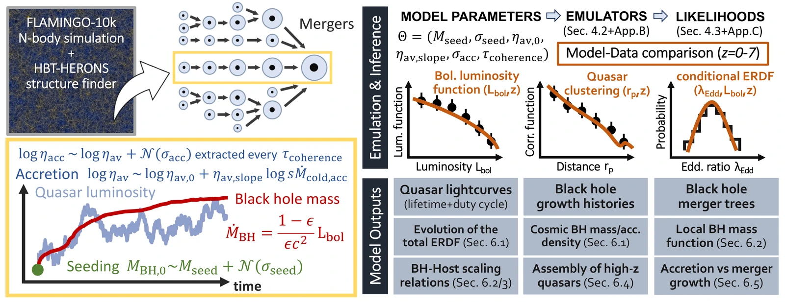
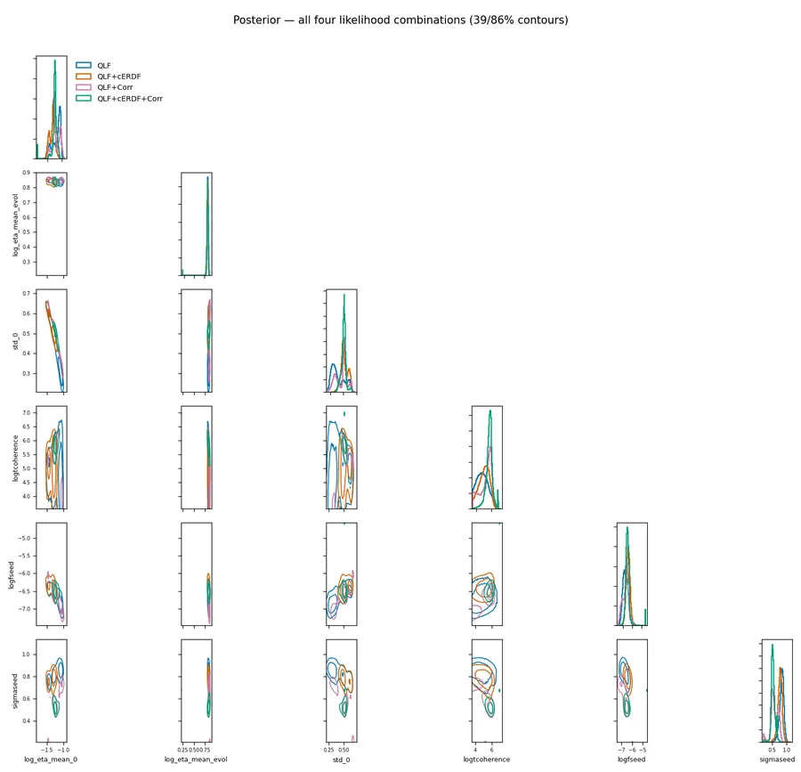
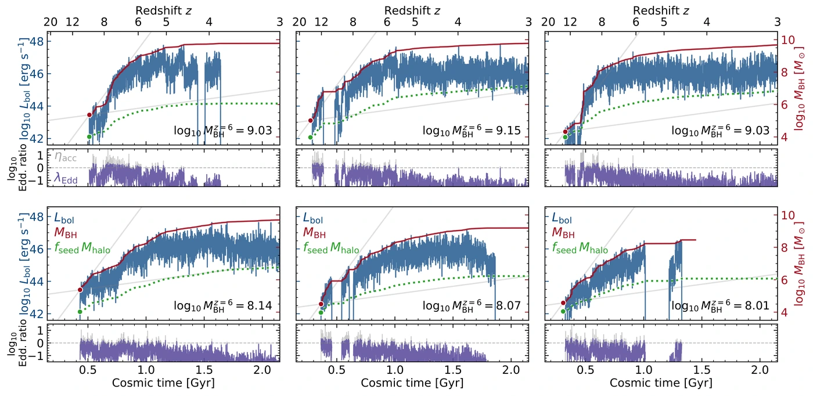
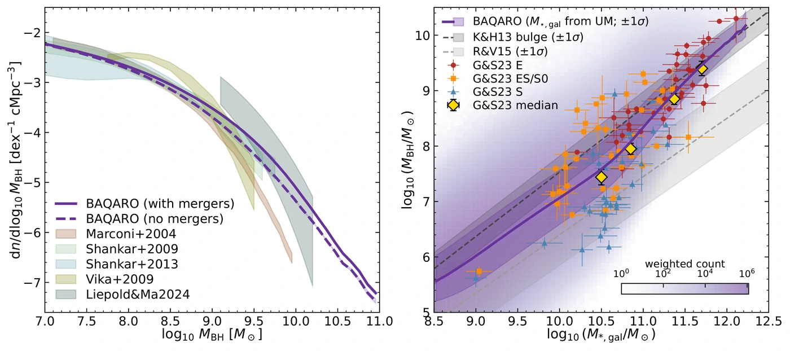

The paper
{{ site.data.baqaro.paper_title }}
{{ site.data.baqaro.paper_authors }}. {{ site.data.baqaro.paper_journal }}.
Black hole Accretion and Quasar Activity in a Realistic Observational framework: a semi-empirical model for how supermassive black holes grow and light up as quasars, from cosmic dawn to the present day.
BAQARO is built on the subhalo merger trees of the FLAMINGO-10k dark-matter-only simulation, a trillion particles in a 2.8 Gpc box, large enough to contain the rare, massive haloes that host the brightest quasars. A black hole is seeded in each halo as it enters the tree, and grows through accretion tied to its host’s cold-gas supply. Six free parameters are fit jointly to the bolometric quasar luminosity function, quasar clustering, and the conditional Eddington-ratio distribution at fixed luminosity, over 0 ≲ z ≲ 7.
The defining choice is that accretion is treated as intrinsically stochastic: rather than smooth, deterministic growth tracks, black holes accrete in fluctuating episodes set by a coherence timescale and an overall scatter. That is not a detail. It is what lets rare billion-solar-mass black holes emerge as outliers of the accretion-rate distribution while the bulk of the population grows far more steadily. Those same fluctuations set the quasar lightcurve, so one timescale governs both how a black hole grows and how long it shines, leaving its imprint on lightcurves, on the proximity zones a quasar carves into the intergalactic medium, and on quasar clustering.
Mergers are followed alongside accretion, on the simulation's own trees. They stay subdominant, mattering most at z ≲ 1 for the heaviest black holes once cold gas has run out. Tracking them also produces a catalogue of coalescing black hole binaries, connecting the model directly to the gravitational-wave channel.
{{ site.data.baqaro.paper_title }}
{{ site.data.baqaro.paper_authors }}. {{ site.data.baqaro.paper_journal }}.
The full pipeline: forward model, Gaussian-process emulators, likelihoods and MCMC, and the scripts that make every figure in the paper.
Browse on GitHub →
Accretion rate and luminosity are not the same thing. ηacc is the rate; λEdd is the light it produces. Radiative efficiency depends on the rate, so the two separate most in the brightest bursts, which is how the model grows black holes fast without over-producing luminous quasars.
The third curve is ηacc averaged from the start up to each moment; the dashed line is what that average tends to over a long enough stretch. τ controls how quickly one reaches the other. Short τ packs hundreds of draws into the window, so the average settles at once and every black hole grows alike. Long τ leaves a handful, so it can sit well above the line for all 100 Myr. That spread is what lets an individual black hole end up far above the average, and it is why τ shapes the massive end of the population.
The lower panel follows the consequences, for a black hole starting at 108 M☉. Its mass integrates the accretion rate, so time above the average is banked and never lost: the one that opened with two strong bursts stays ahead. Beside it is the lightcurve the same history produces, which follows the rate directly instead of integrating it, so the bursts that build the mass are also when the object shines as a bright quasar.
Mergers are tracked along the trees as well, but they turn out to contribute only marginally to black hole growth compared to accretion, even under generous assumptions about merger timescales and remnant survival.
The three panels above show the ingredients of the model. The panels below show what those ingredients produce when the model is run over the whole halo catalogue: the summary statistics that the fit is made against. Dashed lines mark the best-fit model throughout.
Running the model is expensive: the fiducial run writes 780 GB across sixteen nodes, and even a subsampled run takes hours. The summary statistics are therefore emulated with Gaussian processes trained on a few thousand forward runs, which reproduce the model in milliseconds. This is what makes the inference below possible. It is also what powers these sliders: move any of the six parameters and every panel is recomputed in your browser. Held out from the training set, the emulators reproduce the forward model to 0.11 dex (luminosity function), 0.22 dex (Eddington ratios) and 0.20 dex (host halos) root-mean-square — smaller than the observational uncertainties they are fitted against.
The model is fitted to three datasets at once: the quasar luminosity function (QLF), the conditional Eddington-ratio distribution (cERDF) and quasar clustering (Corr), the same three quantities shown in the sliders above. The posterior is sampled for every combination of them, so the constraining power of each combination of observables can be assessed.

The fiducial model is the best-fit combination from the joint fit to all three (yellow stars in the corner plot). It is what the sliders return to, what the panels above are drawn at, and what every result below comes from.
| Parameter | Best fit | Prior | Meaning |
|---|---|---|---|
| {{ p.sym }} | {{ p.val }} | {{ p.prior }} | {{ p.desc }} |
Fitted to the luminosity function, the Eddington-ratio distribution and clustering, the model reproduces all three from z ≈ 7 to z ≈ 0. It also reproduces quantities it was never fitted to: the local black hole mass function, the local scaling relations, and the cosmic black hole mass and accretion densities. Three conclusions stand out.


Not everything matches. The model over-produces the faint end of the luminosity function relative to pre-JWST surveys, although JWST may be finding exactly the faint AGN those surveys missed. Its Eddington ratios sit slightly too high at z ≈ 5 (where the measured values rest on C IV virial masses) and too low at z ≈ 1, where their distribution is also broader than observed, especially for bright sources. And the clustering of z ≈ 4 quasars remains somewhat stronger than the model predicts. Each of these may reflect observational systematics as much as a limitation of the model, and will need further work on both the observational and the modelling side.
Summary statistics on the model's own grids, the portable emulators behind the sliders above, the MCMC chains, and a per-object catalogue of the bright quasars across 41 redshifts. Every file carries a provenance record of the parameters, code revision and build time that produced it. These are released once the paper is accepted, and available on request before then.
If you use BAQARO, please cite the model paper. If you use the data products,
please cite its DOI as well{% if site.data.baqaro.data_doi and site.data.baqaro.data_doi != "" %} ({{ site.data.baqaro.data_doi }}){% endif %}.
Code {% if site.data.baqaro.data_url and site.data.baqaro.data_url != "" %} Data {% endif %} {% if site.data.baqaro.paper_url and site.data.baqaro.paper_url != "" %} Paper {% endif %}